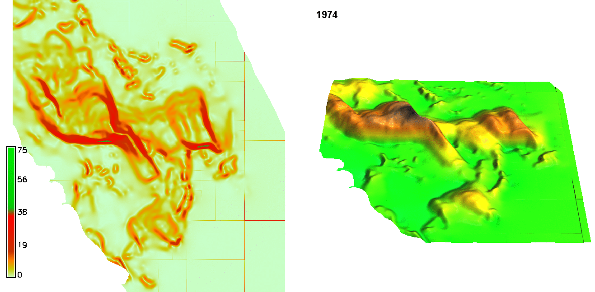
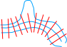
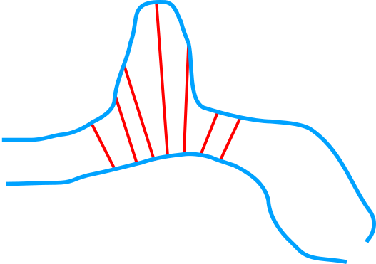
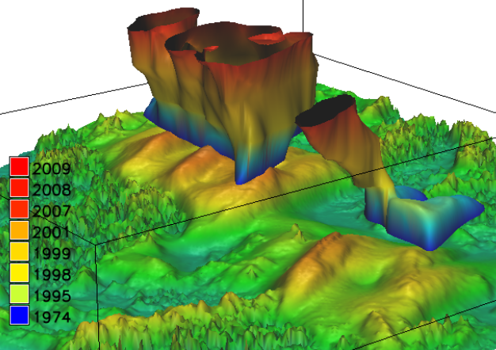

<section>
    <h3>Terrain time series animation</h3>
    <h4>Jockey’s Ridge dune</h4>
    
    <!--<ul>
        <li>understandable but not analytical</li>
    </ul>-->
    <p class="small">
        Created in GRASS GIS Animation Tool
    </p>
    <aside class="notes">
        Jockey’s Ridge dune which is moving and changing 
        Animation in 2D and 3D 
    </aside>
</section>
<section>
    <h2>Shoreline transects</h2>
    
    <aside class="notes">
        We study evolving shorelines using transects.
        Transects divide shoreline and specify areas where we measure the changes.
        There are very good algorithms for creating transects, for example in GRASS GIS.
        However, transects for one set of shorelines might not work when
        shoreline changes significantly.
    </aside>
</section>
<section>
    <h2>Connecting contours</h2>
    
    <aside class="notes">
        To relate two different shorelines or contours we can draw
        the connections manually.
        This is a lot of work and it's impossible to reproduce.
    </aside>
</section>
<section>
    <h4>Isosurface of a countour (Jockey’s Ridge dune)</h4>
    
    <p class="small">
        Created in GRASS GIS 3D Viewer (NVIZ)
    </p>
    <aside class="notes">
        Advanced method of exploratory visualization are isosurfaces of space time cube.
        Stacking
        Contour for one elevation extruded
        Needs special 3D raster processing tools and understanding.
        We have the tools and we are using it often
        and it is very useful but it is not accessible to everyone.
    </aside>
</section>
